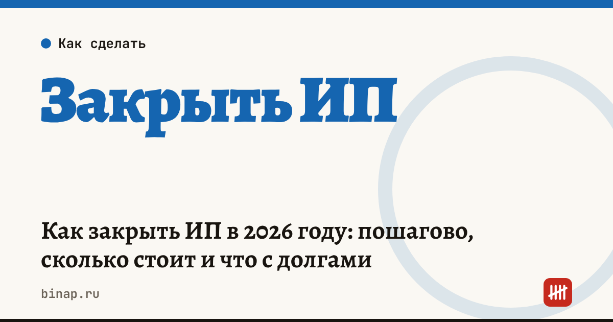

Как закрыть ИП в 2026 году: пошагово, сколько стоит и что с долгами

Закрыть ИП онлайн можно бесплатно, на бумаге пошлина 160 ₽. Налоговая регистрирует закрытие не дольше 5 рабочих дней. Потом у вас есть 15 календарных дней, чтобы заплатить взносы за себя. После закрытия всё равно нужно сдать декларации и заплатить налоги за время работы.
Коротко
- Для закрытия подают одно заявление по форме Р26001 в налоговую по месту жительства (ст. 22.3 закона № 129-ФЗ, разъяснения ФНС).
- Пошлина на бумаге — 20% от пошлины за регистрацию ИП (800 ₽), то есть 160 ₽ (пп. 6–7 п. 1 ст. 333.33 НК; итог — расчёт редакции).
- Если подать электронно или через МФЦ, пошлину не платят (пп. 32 п. 3 ст. 333.35 НК, ФНС).
- Регистрация занимает не больше 5 рабочих дней (п. 1 ст. 8 закона № 129-ФЗ).
- Фиксированные взносы за себя платят не позднее 15 календарных дней после снятия с учёта (п. 5 ст. 432 НК).
Сроки, изменения и разборы для ИП и самозанятых — каждое утро в Telegram и MAX. Подпишитесь, чтобы не пропустить.
Что это значит
Пока ИП не закрыт, ему начисляют фиксированные взносы, даже если он давно не работает. Поэтому если бизнес остановился, ИП лучше закрыть официально. При этом закрытие не освобождает от деклараций и налогов за время работы (ФНС).
Как подать заявление:
| Способ | Подпись | Пошлина 160 ₽ |
|---|---|---|
| Личный кабинет ИП на сайте ФНС | УКЭП или бесплатная подпись в приложении «Госключ» | не платят |
| Сервис ФНС «Государственная онлайн-регистрация бизнеса» | УКЭП или «Госключ» | не платят |
| МФЦ | на месте | не платят |
| Лично в налоговой на бумаге | на месте | платят |
В личном кабинете ИП есть раздел «Прекратить деятельность в качестве ИП». Большинство полей заявления Р26001 там заполняется само.
Что сделать сейчас: чек-лист перед закрытием
ФНС советует до подачи заявления сделать четыре вещи:
- Рассчитаться с сотрудниками и расторгнуть трудовые договоры.
- Заплатить все налоги. Посмотрите сальдо ЕНП в личном кабинете.
- Сдать всю отчётность, которую уже пора сдавать.
- Снять с учёта онлайн-кассу.
Потом:
- Подать заявление Р26001 — удобнее онлайн, тогда без пошлины.
- Проверить запись в ЕГРИП через сервис ФНС с выпиской — не позже чем через 5 рабочих дней.
- Заплатить взносы за себя за отработанную часть года — в течение 15 календарных дней после снятия с учёта.
- Сдать последнюю декларацию. Для УСН НК привязывает срок к месяцу прекращения деятельности: не позже 25-го числа следующего месяца (п. 2 ст. 346.23, п. 8 ст. 346.13 НК).
- Закрыть счёт ИП последним, когда пройдут все платежи и возвраты.
Когда закрываться (расчёт редакции). Пример: ИП без сотрудников решил закрыться до конца 2026 года. Если подать заявление 14 декабря (понедельник), 5 рабочих дней закончатся 21 декабря. Срок на взносы — 15 календарных дней — тогда истечёт в начале января. Чтобы закончить все платежи в 2026 году, подавайте заявление в первой половине декабря и платите взносы сразу после записи в ЕГРИП.
Если вы закрываетесь, чтобы уйти в самозанятость, проверьте, подходит ли она вам: как стать самозанятым пошагово. Если вы не закрываетесь, а хотите сменить форму бизнеса, сравните варианты в статье «ИП или ООО: что выбрать в 2026–2027 годах». Если позже решите открыть ИП снова, пригодится инструкция «Как открыть ИП онлайн».
Частые вопросы
Можно ли закрыть ИП, если остались налоговые долги? Заявление примут, но долги никуда не денутся: декларации и налоги за время работы ИП остаются обязанностью человека (ФНС).
Нужна ли пошлина, если подавать через МФЦ? Нет. Через МФЦ и при электронной подаче с подписью пошлину 160 ₽ не платят (ФНС, пп. 32 п. 3 ст. 333.35 НК).
А как закрыть ООО? Ликвидация ООО устроена сложнее. Для компаний из реестра МСП есть упрощённый порядок, мы разбирали его в статье «Закрыть ООО за 3,5 месяца».